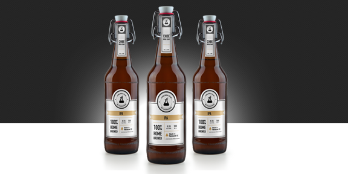

I am a chemical engineer with an emphasis in process control. I’m interested in the continuation of my technical and non-technical skills, in both my area of expertise and outside. My hobbies include learning to program, playing the guitar and weight lifting. I am currently looking for employment as an EIT where I can continue to develop my technical skills.
University of British Columbia
4 Year Degree
NORAM ENGINEERING AND CONSTRUCTORS LTD.
NORAM Engineering is a consulting company which “develops, engineers and commercializes technologies for the processes and resource industries”. While working for NORAM day to day activities included: performing process design detailed calculations, such as mass balances, equipment sizing, line sizing, hydraulic and pump sizing as well as material selections. Hydraulic calculations were performed within FluidFlow3. Larger projects that were done while at Noram included creating Mass and Energy balance or Process Flow Diagrams for entire Sulphuric acid plants. As well as developing computer programs within MathCad to calculate temperature and mass transfer profiles within an absorption tower.
INNVENTIA AB.
INNVENTIA is a “world leader in research and development relating to pulp, paper, graphic media, packaging and biorefining”. One project which I worked on was the design of a data recording system which was capable of measuring the dewatering speeds of pulp fibers onto pulp screens. This system was used to develop a correlation between paper qualities and dewatering speeds. Day to day activities included measuring typical pulp qualities including tensile, stiffness, strength and burst. I was also part of a team that work with a number of functional fibers such as PLA, Hemp, Softwood, Hardwood and recycled fibers such as clothing materials. The idea of this project was to learn how different types of fibers compare to classical wood fibers. Results were reported in a scientific paper which is to be submitted to the scientific journal-cellulose.
CANFOR LTD.
Canfor is “one of the world’s largest producers of sustainable lumber, pulp and paper”. While at Canfor I designed a visual basic (VBA) program which was capable of extracting text files from a Pulp Eye machine, a fiber property analyzer. This program was also capable of retrieving specific data information and was capable of logging it into an excel program. As a team member I conducted multiple trials within a pulp mill to develop a new grade of pulp capable for use in electronic applications. Day to day activities at Canfor included conducting pulp quality tests such as conductivity, pH, tensile, tear and freeness, as well as assisting running pilot plant sized pulp refineries in order to make energy specific pulps. Routine strength audits were also completed as part of a team at the Prince George pulp mills.
UBC CHEMICAL ENGINEERING DEPT.
Noram Engineering and Constructors
Knikolaisen@noram-eng.com
Canfor Pulp Innovation
Ranbir.Heer@canforpulp.com
Director of the Pulp and Paper Center at UBC
Mark.martinez@ubc.ca
Aspen Plus
Microsoft Excel
Microsoft Word
MatLab
MathCad
HTML / CSS

CHBE Brewing Club
Fourth Year Design Project
Template From BlackTie.Co